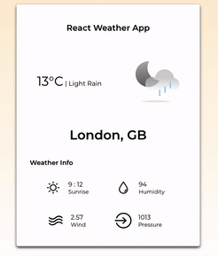
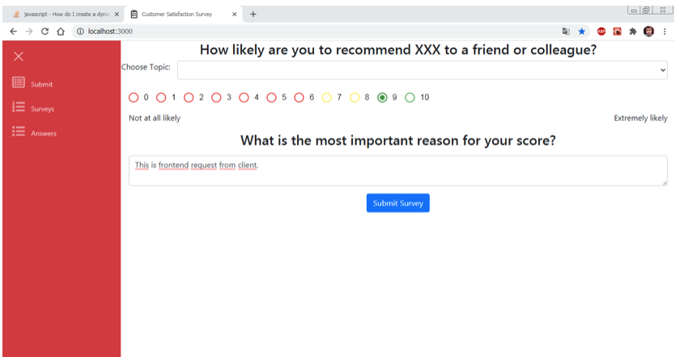
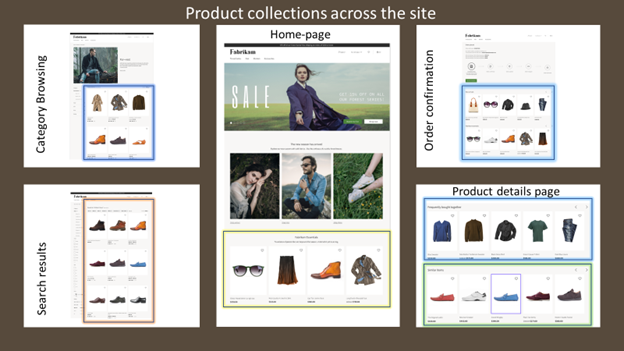

React Weather App GitHub
 The React Weather App utilizes Open Weather APIs to fetch current weather data for a specified city. It leverages styled-components for styling, axios for making HTTP requests, and react-scripts for managing the React application environment. By integrating the Open Weather API endpoint (https://api.openweathermap.org/data/2.5/weather?q={CITY_NAME}&appid={API_KEY}), users can easily retrieve real-time weather information for their desired location within the React-based interface.
Tech Stack:React, Javascript, HTML, CSS, Material-UI, AWS S3, AWS API Gateway
Survey System - Prepare A Survey And Get Feedback From CustomersGitHub
 The Survey System enables businesses to create customized surveys tailored to their specific needs and collect valuable feedback from customers. Utilizing intuitive design and user-friendly interfaces, it ensures seamless interaction for both survey creators and respondents. With robust analytics and reporting features, businesses can gain actionable insights to improve products, services, and overall customer satisfaction.
Tech Stack:React, Javascript, HTML, CSS, Material-UI, AWS S3, AWS API Gateway, NodeJs
E-commerce website - Product CatalogGitHub
 The E-commerce website's Product Catalog feature offers users a comprehensive display of available products, enabling easy navigation and exploration of various categories and items. With intuitive search and filtering functionalities, customers can efficiently find desired products, while product pages provide detailed information, images, and reviews to facilitate informed purchasing decisions.
Tech Stack:React, Javascript, HTML, CSS, Material-UI, AWS S3, AWS API Gateway, NodeJs